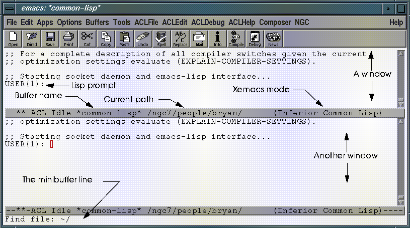
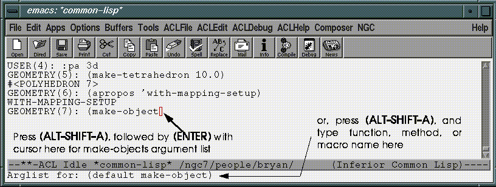
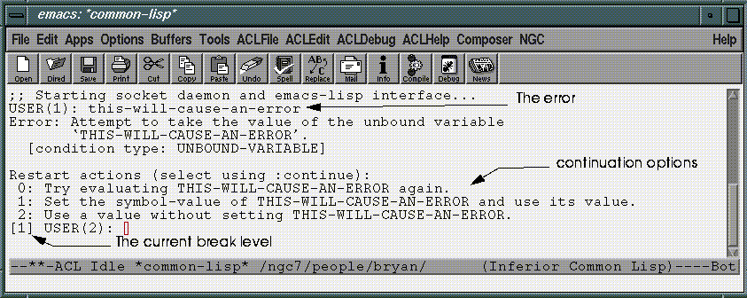

LISP extensions to N·World are edited and compiled using Xemacs. To begin editing new LISP code:
Getting Started
(default *common-Lisp*)
/usr/local/ngc/bin/nworld-3-0-0
debug t. This instructs Xemacs to provide you with a listener, or interactive prompt from which you can evaluate Lisp forms.
Xemacs is fully extensible, and Franz has taken advantage of this by adding a host of tools for creating Lisp code. These include facilities for compiling and debugging code, as well as for inspecting Lisp objects. Xemacs has excellent online documentation, and there are a number of excellent third-party references available as well.
Using Xemacs
Extending Xemacs
You can use emacs Lisp (a non-ANSI dialect of Lisp) to extend Xemacs in several ways, including adding new key bindings, adding new menu commands. Extensions to Xemacs are stored in files with the extension .el. The N·World Developers Kit includes two such files: nworld-emacs-std.el and nworld-site-init.el

The Xemacs Window
Figure 3.1 illustrates the major features of the Xemacs windowing system. When you enter text in a window, you are modifying a buffer. You can display several buffers at any given moment, but you can only enter text into a single buffer at a time.
Basic Commands and Key Bindings
You issue Xemacs commands by pressing key-combinations, or by selecting items from the pull-down menus in the menu bar. Table 3.1 summarizes some of the important Xemacs window and buffer manipulation key bindings.
There are many more useful Xemacs key bindings. To obtain a complete list of these:
1. Select Help/List Key Bindings from the Xemacs menu bar
There are two primary ways of entering code in Lisp:
Creating Code
Entering Code in the Lisp Listener
Code entered in the Lisp listerner is evaluated right away. For example, if you type in a Lisp form which defines a function and then press return, that function is interpreted and integrated with the current Lisp image.
Entering Code in a Buffer
You can also type your forms into a buffer, which you can save to a file. This is how you should enter code you wish to save for later use. You can edit an existing file, or create a new file.
1. Type (C-X C-F), or choose File>Open from the Xemacs menu.
3. To create a new file, enter a filename which does not correspond to an existing file.
~/MyLisp.lisp
/usr/local/ngc/src/plugin
Xemacs Modes
Xemacs has several different editing modes which allow you to optimize the editing environment for each task. When you are writing Lisp code, you'll want to be sure that Xemacs knows to invoke Lisp mode whenever you open a Lisp file for editing. To ensure that Xemacs opens your Lisp files in Lisp mode, include a mode line at the top of your file.
1. (CLICK-L) on NGC>Mode Line>Update Mode Line
;;; -*- Mode: Common-Lisp; Package: USER; -*-
Finding a Function, Method, or Macro
You can search a Lisp image for defined functions, methods, or macros whose names contain all or part of a search string that you specify. For example, if you wanted to obtain a listing of functions whose names contained "mom", you would type the following at the lisp prompt:
USER(17): (aprop
GEOMETRY::*MAX-MOM-OBJECTS* value: 40
GEOMETRY::MAX-MOM-HEIGHT [function] (&OPTIONAL N-OBJECTS)
USER(18): (apropos `mom :3d)
Getting the Argument List of a Function
Often, you'll want to see which arguments a function requires. You can use the Xemacs key binding (M-SHIFT-A) to return the argument list for a function. Xemacs prompts you to enter a function, method, or macro name in the minibuffer area at the bottom of the screen

If the cursor is in a Lisp form near a function name, Xemacs will offer that function as the default. This situation is illustrated in Figure 3.3. You can obtain the arguments of a different function by typing in it's name in the minibuffer window.
Getting the Source Code of a Function
Whey you're working with Lisp, you'll frequently want to review the source code for the functions, methods, and macros you encounter. The Xemacs key-combination (M-.) (spoken as "Meta-dot") will find the source code file for a given function, and open that file in a new buffer. Just position the cursor over the function name and press (M-.). You can also press (M-.) and then type a function name into the mini-buffer.
Object Oriented Programming Tools
N·World code is object-oriented. ACL provides several powerful tools for examining and navigating through the N·World class hierarchy. These tools are part of the ACL composer. To use them, you must launch the composer from within Xemacs.
Using the Window Inspector
The Lisp Window Inspector provides an powerful tool for inspecting Lisp classes and other objects. You can find out about superclasses, subclasses, instance slots, and methods, as well as many other attributes. For example, let's say you wanted to learn how to retrieve the coordinates of a point. You can inspect the point class, find the slot which holds coordinate values and the corresponding accessor function.
1. (CLICK-L) on Composer>Start Composer in the ACL main menu.
2. Select CLOS>Inspect Class from the Composer menu
3d:point) appears:
You can compile Lisp forms in four basic ways with Xemacs.
Compiling Your Code
Compiling Individual Forms
You can compile individual forms from the Lisp listener or within a buffer. Just place the cursor within the form and type (M-Sh-X). Forms compiled in this fashion remain in the current world until redefined, or until you exit Lisp. If you want to save a form which you have compiled, you'll need to include it in a file and save it to disk.
Compiling a Buffer
1. (CLICK-L) on Compile>Other>Buffer from Xemacs' ACLfile menu.
Compiling to a File
You can compile your Lisp code directly to a .fasl file. This file can be loaded into a Lisp image, or loaded with N·World as a plug-in. To compile a buffer to a file:
1. Select ACLfile>Compile File from the Xemacs menu.
2. Enter a file name for the source file in the minibuffer.
/usr/local/ngc/src/plugin.
The ACL debugger is a complex and powerful tool. This section is intended to provide only a brief of overview of this powerful tool, as well as some of the more commonly used debugging commands. To use the debugger effectively we recommend a careful reading of Chapter 5 in the Allegro Common Lisp User Guide.
Using the Debugger
Break Levels
Interaction with Lisp takes the form of a read-eval-print loop: Lisp reads input, evaluates it, and prints any returned values. When an error occurs, Lisp enters a break-level, which is a new read-eval-print loop. The current break level is displayed as part of the Lisp prompt, as shown in Figure 3.6

Moving Through Break Levels
When you find yourself in a break level, you can either execute debugger commands to try and resolve the error, or execute one of several commands to move between read-eval-print loops.
Generally,
:reset will break you out of any error and return you to the top-level.
Debugging and Multiprocessing
Allegro Common Lisp supports multiprocessing. If you are using multiprocessing, you'll want to take care when debugging code that the commands you type are being sent to the correct process. The process in which commands are typed is called the listener process, and the process which is being debugged is called the focussed process.
Once you've compiled and saved your code, you're ready to make it available for use in N-World. You do this by creating plugin files. Plug-ins are .fasl files containing code intended to add well-defined new functionality to N·World.
Working with Plug-Ins
Storing Your Plug-ins
Although plug-ins in the default directory are automatically loaded when N·World loads, you may wish to consider storing your code in a separate subdirectory. Doing so will protect your code from being overwritten if you install a new version of N·World in the future.
For example, you might create a subdirectory under the plug-in directory:
/usr/local/ngc/plugin/ourplugins
Using Your Plug-ins
N·World loads patches and plug-ins in the following order at start-up:
1. Files in the default patch directory.
2. Files in the default plug-in directory.
3. Files specified in the .clinit.cl file in N·World's home directory.
4. Files specified in the .clinit.cl file in the user's home directory.
Default Plug-in Directories
When N·World loads, .fasl files located in the default patch and plug-ins directories are loaded automatically.
The default patch and plug-in directory paths are:
/usr/local/ngc/plugin
/usr/local/ngc/patch/nworld-3-0-x
Loading Plug-ins Every Time N·World Loads
To load specific plug-ins every time N·World loads:
1. Place all plug-ins you want to load in a single subdirectory.
/usr/local/ngc/plugin/ourplugins
/usr/local/ngc/bin/.clinit.cl
(load-plugins "/usr/local/ngc/plugin/ourplugins/")
(load "/usr/local/ngc/plugin/ourplugins/aplugin.fasl")
Loading Plug-ins in Specific Situations
You can configure individual user's .clinit.cl files to load only those plug-ins stored in specific directories. Doing so can help to reduce the overall amount of code loaded into memory when N·World executes.
To load user-specific plug-ins:
1. Place user-specific plug-ins in the appropriate directory.
/usr/local/ngc/plugin/ourplugins/animation/
/usr/local/ngc/plugin/ourplugins/devo
(load-plugins "/usr/local/ngc/plugin/ourplugins/animation/" )
(
Copyright © 1996, Nichimen Graphics Corporation. All rights reserved.